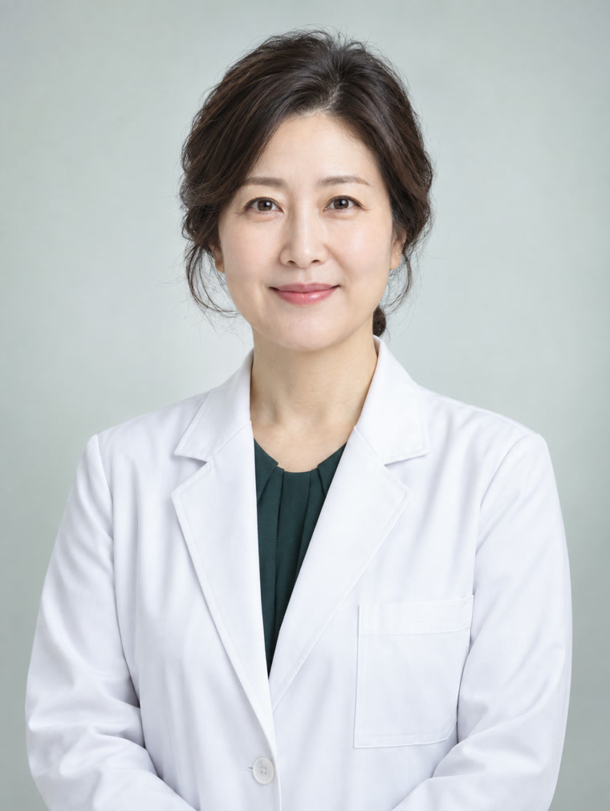
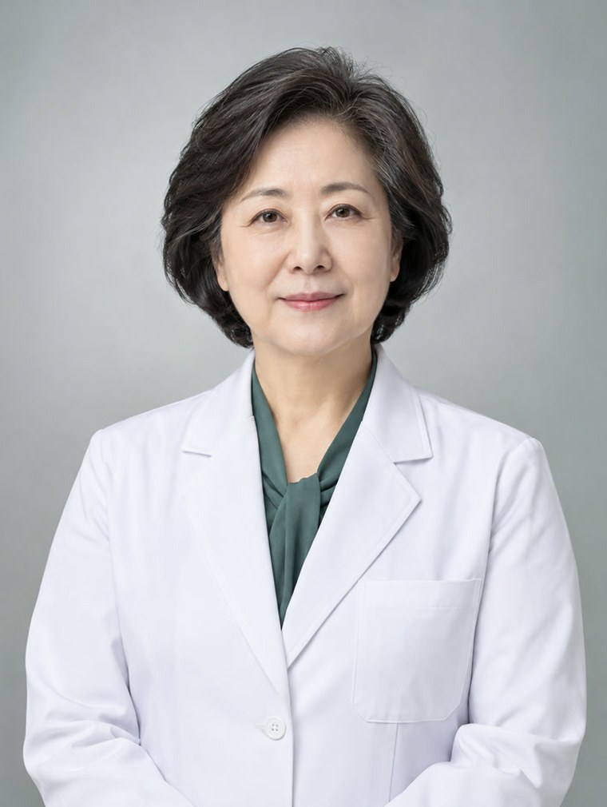
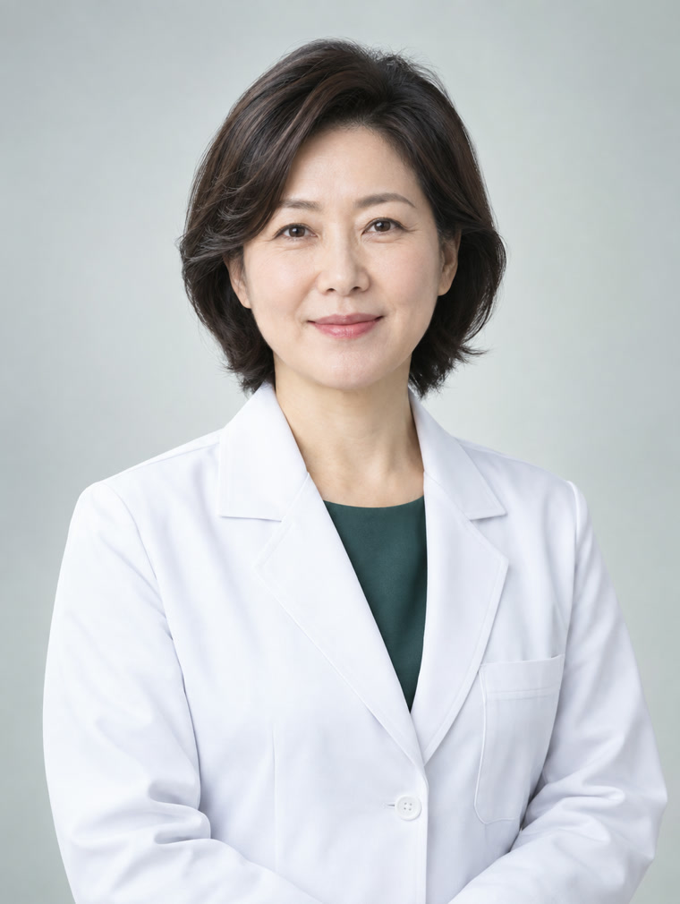
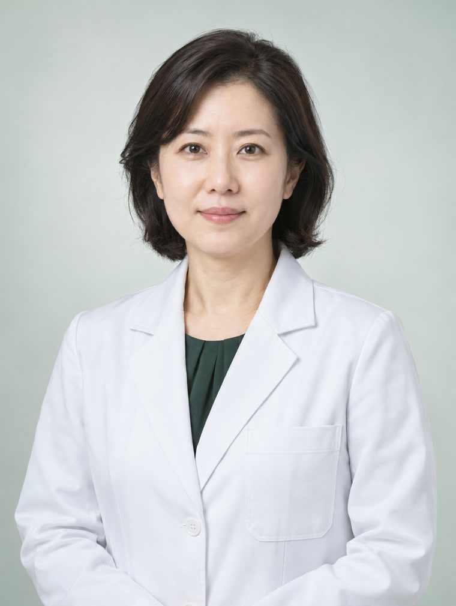
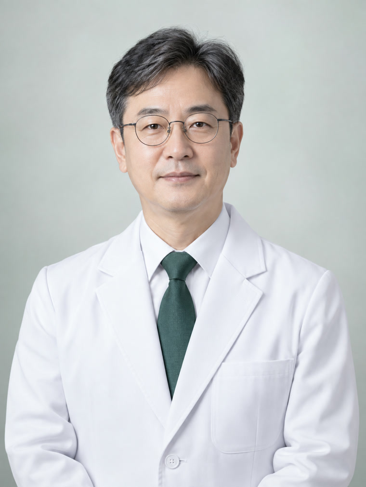

백혈병센터
백혈병센터는 급성골수성백혈병, 급성림프모구백혈병, 만성골수성백혈병, 만성림프구성백혈병 등 백혈병 환자의 진단부터 항암치료, 조혈모세포이식, 이식 후 관리까지 전 과정을 전담하는 센터입니다.
센터장을 포함한 혈액내과 전문의가 연간 100례 이상의 동종조혈모세포이식을 시행하며, 반일치 이식과 제대혈 이식까지 공여자 조건에 따라 선택할 수 있도록 이식 경로를 넓혀두었습니다.
백혈병센터에는 환자 관리를 위한 전담간호사와 이식코디네이터, CAR-T 세포치료 코디네이터가 배치되어 있고, 치료 중 발생하는 문제를 함께 관리할 감염내과·진단검사의학과·재활의학과 전문의와 약사, 영양사, 의료사회복지사가 한 팀으로 회복과 재활을 지원합니다.
혈액내과
-

-

-

진단검사의학과
-

-
